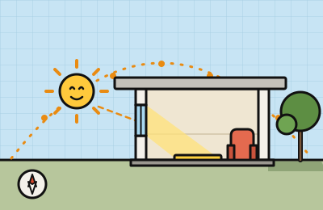

sol!

Casa ao Sol
Desenhe a planta de uma casa com o mouse, com paredes, janelas, portas, beirais e árvores, e veja por onde o sol entra em cada hora do dia e em cada época do ano. A posição do sol sai da latitude, da data e da hora, as sombras são calculadas em 3D, e a cobertura pode ficar invisível sem deixar de fazer sombra. Luz natural, calor e ventilação são as próximas etapas.